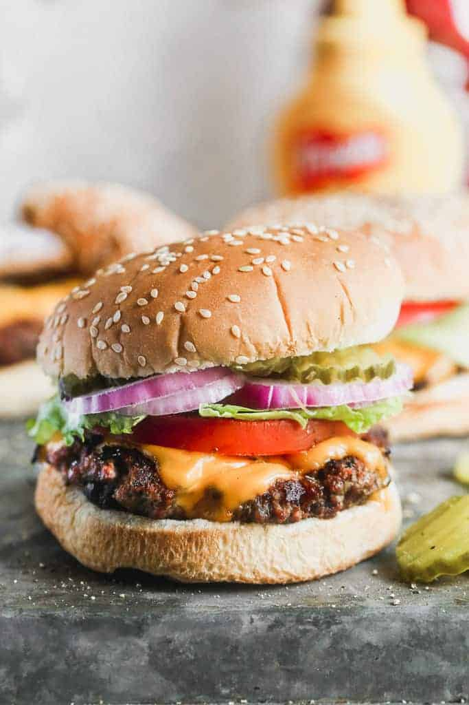

Hamburger Recipe

Enjoy a classic Hamburger with a premium taste
You can search the web and find all sorts of burger recipes, but when it comes to making a classic, no-frills, juicy hamburger, all you need is good quality meat,
and a good burger seasoning. There’s no need for fillers like eggs or breadcrumbs.
I’ll walk you through the simple steps to how to prepare, season, and cook the burgers, plus make-ahead and freezing instructions.
Burger Seasoning:
- 1 1/2 teaspoons ground black pepper
- 1 teaspoon salt
- 2 teaspoons paprika
- 1/2 teaspoon brown sugar
- 1/4 teaspoon garlic powder
- 1/4 reaspoon onion powder
- 1/4 teaspoon cayenne pepper
Mix all spices together to use for the Hamburger.
Ingredients:
- ground hamburger patty
- lettuce
- tomato
- onion
- pickles
- buns
- condiments of your choice: ketchup, mustard, etc...
Making The Classic Hamburger:
- Prep the seasoning. Combine all spices into a bowl.
- Form patties. If patties are not premade,
make a 1/2 inch patty that are wider than the bun. Squash
it and prepare to grill.
- Season the patty. Add the seasoning to the patty.
- Grill. Cook the patty on each side for about 3-4 minutes on medium high heat. If
adding cheese, place a slice on the patty during the last minute of cooking.
- Type of burger:
- 2-3 minutes for medium rare
- 3-4 minutes for medium
- 5-6 minutes for well done
- Add the toppings.Add the toppings from the ingredients list
starting with a bun underneath the patty, followed by lettuce, tomato
onion, pickes and the bun.
Congrats!Your Classic Hamburger is now done!